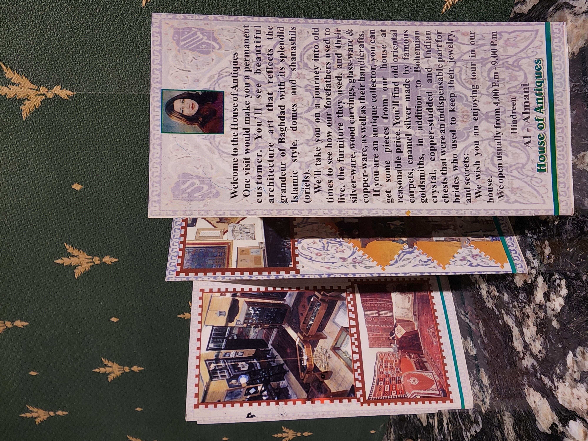

الثمانينات
بروشور بيت التحفيات — الإصدار الأول
وثيقة تعريفية مبكرة تسبق مرحلة الانتشار الواسع للمطبوعات الثقافية، وتُظهر كيف كان بيت التحفيات يقدّم نفسه كوجهة مختلفة داخل بغداد.

هنا نعرض ما نُشر عن بيت التحفيات في الصحف والمجلات عبر السنين: عناوين، تواريخ، وصور مواد أصلية.
شبكة عرض متحفية — فهرسة + بحث سريع
يضم أرشيف بيت التحفيات ثلاث بروشورات مطبوعة فقط، تم إصدارها في فترات زمنية مختلفة: الأولى في الثمانينات، الثانية في التسعينات، والثالثة في عام 2001. هذه المطبوعات لم تكن دعائية فقط، بل وثائق تعريفية رافقت تطوّر هوية بيت التحفيات عبر العقود.
وثيقة تعريفية مبكرة تسبق مرحلة الانتشار الواسع للمطبوعات الثقافية، وتُظهر كيف كان بيت التحفيات يقدّم نفسه كوجهة مختلفة داخل بغداد.
أحد البروشورات الأصلية التي طُبعت للتعريف ببيت التحفيات، عندما كان التوثيق الورقي هو الوسيلة الأهم لحفظ هوية المكان.
إصدار يوثّق مرحلة أكثر نضجًا في تقديم بيت التحفيات، ويعكس تطور لغة العرض والاهتمام بتفاصيل الهوية البغدادية.